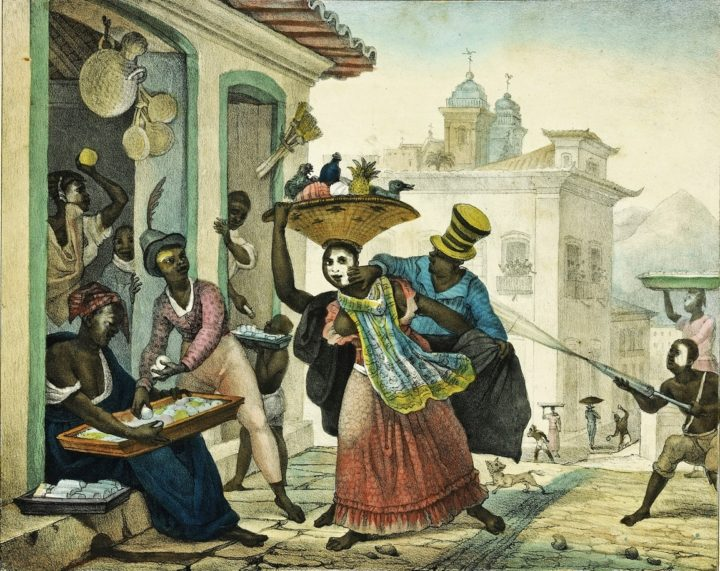
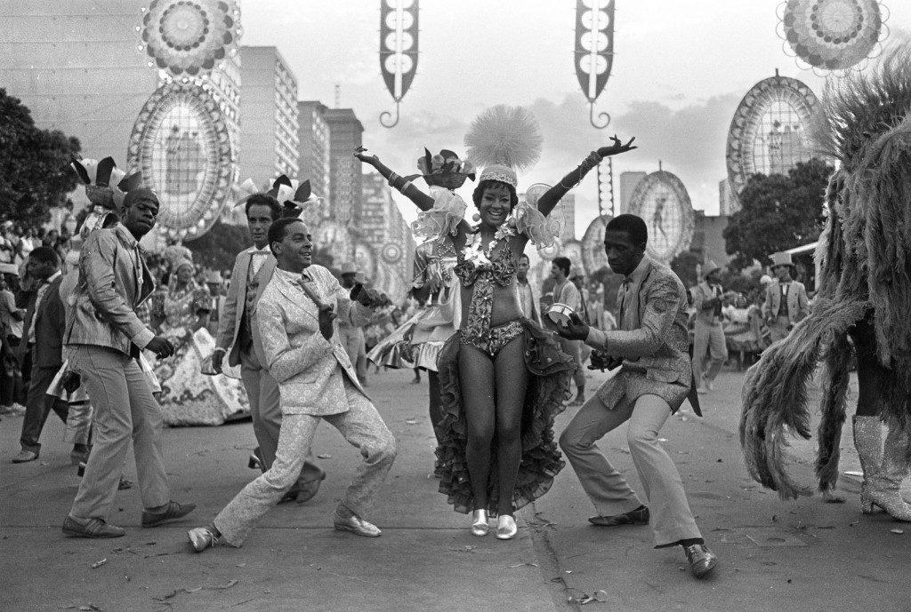
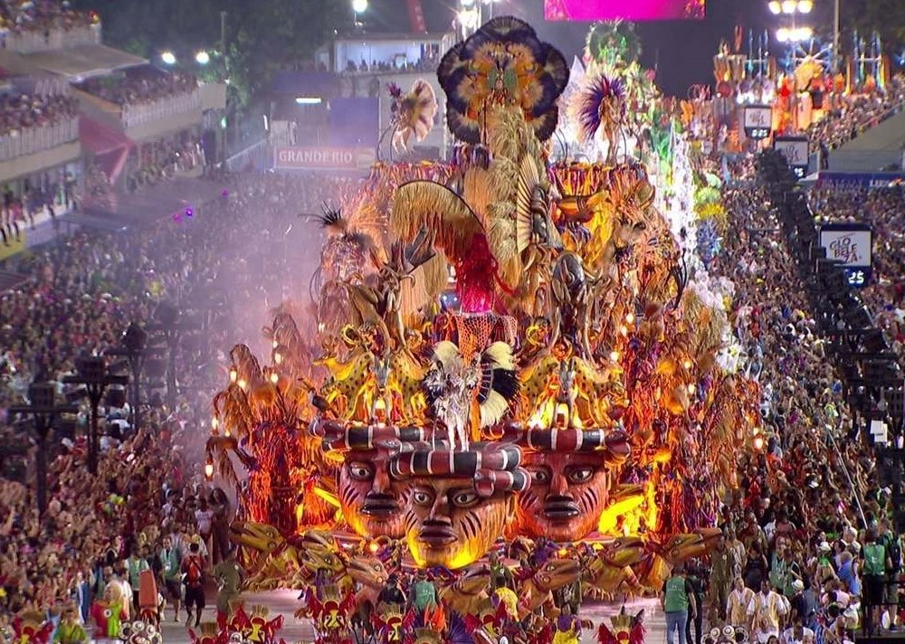
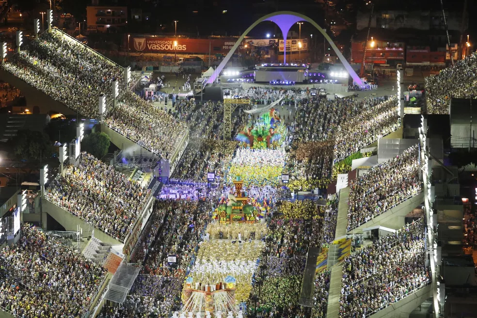
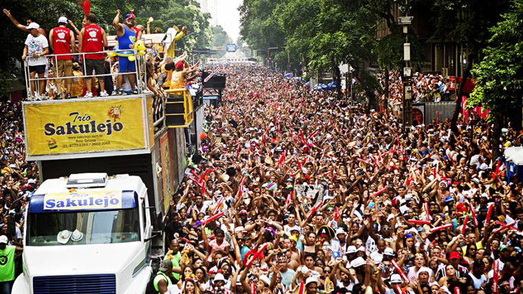

Ao som de sambas-enredo e marchinhas,a cidade do Rio de Janeiro recebe milhões de foliões em suas ruas, quadras e na Sapucaí.
O carnaval do Rio de Janeiro é realizado durante cinco dias consecutivos no mês de fevereiro desde 1893 com a criação do primeiro rancho carnavalesco, o "Rei de Ouros", pelo pernambucano Hilário Jovino Ferreira. Esse festival é considerado o maior carnaval do mundo pelo Livro dos Recordes. Trata-se de uma celebração mundialmente famosa, constituída por diferentes tipos de manifestações culturais, como desfiles de escola de samba, bailes de máscaras, festas móveis dos blocos de embalo seguidos por seus foliões fantasiados, e ainda bandas de rua e blocos de enredo ("escolas de samba" de pequeno porte), chamados de cordões. Também se caracteriza pela irreverência e banalidade, pelos nomes de duplo sentido (especialmente dos blocos) e pela diversidade cultural, musical e sexual.
O carnaval carioca pode ser considerado um evento cultural de alto prestígio, já tendo sido eleito, pelos internautas do site estrangeiro Fun Party, como a melhor festa do mundo. É citado, constantemente, como o carnaval mais famoso que existe.
Região: Sudeste
Rio de Janeiro/ RJ Ritmos Predominantes: sambas-enredo e marchinhas de carnaval
História
No ano de 1840, a alta sociedade carioca começou a realizar bailes de carnaval no Rio de Janeiro. Inspirados nas festas que aconteciam na Europa, os encontros eram regados a muita bebida comida e ritmos tipicamente europeus, como a valsa, a quadrilha. Enquanto isso, nas ruas da cidade, milhares de foliões continuavam a brincar o entrudo - festa portuguesa em que foliões fantasiados dançam e jogam limões de cheiro, farinha ou água nas outras pessoas que brincavam.

Os cordões eram identificados pela figura do "Zé Pereira", originalmente tocadores de bumbo que acompanhavam procissões em Portugal. Esses personagens se espalharam pelo Rio de Janeiro no século 19 e saíam às ruas cantando o refrão "viva o zé-pereira/ Viva, viva, viva!". Foram os precursores do surdo de marcação, usado até os dias de hoje pelas escolas de samba. Conduzidos por um mestre que comandava o instrumental percussivo, todos os participantes do bloco com seu apito, os cordões eram formados por foliões fantasiados de palhaços, diabos, baianas, morcegos e índios.
Os ranchos se tratavam de cordões mais organizados, com mais luxo e refinamento do que os cordões. O instrumental era composto de violões, cavaquinhos, flautas e clarinetas e embalavam mestres-salas, um coro e uma espécie de ala coreografada.
A primeira escola de samba carioca (Deixa Falar) foi fundada no ano de 1928, no bairro carioca de Estácio, centro do Rio de Janeiro. Anos depois, começou a competição entre elas, disputada na Praça Onze. No ano de 1935, as escolas de samba do Rio de Janeiro passam a ser oficialmente reconhecidas e entram na programação oficial da cidade e elas passam a desfilar na Avenida Rio Branco. Em 1962, o Departamento de Turismo da cidade construiu arquibancadas e implantou a venda de ingressos no circuito das escolas de samba. Vinte e dois anos depois, o sambódromo carioca foi inaugurado. O espaço, projetado pelo arquiteto Oscar Niemeyer, possui 85 000 metros quadrados. As disputas do grupo especial e dos grupos de acesso das escolas de samba cariocas acontecem no mesmo espaço desde então.

Samba-enredo
Como o próprio termo sugere, o samba-enredo é aquele que narra a história que a escola de samba vai apresentar na avenida. O gênero surgiu na cidade do Rio de Janeiro no ano de 1930 e na mesma década já se popularizou nas quadras das agremiações. De acordo com o livro "Almanaque do Carnaval", o encurtamento dos sambas enredo e a massificação deles foram a base do esvaziamento do papel do samba-enredo durante o desfile. Para alguns críticos, sua função se restringe a mero fundo musical do espetáculo.

Marchinha
Esse gênero musical tem origem nas marchas populares portuguesas e foi o principal ritmo do Carnaval brasileiro da década de 1920 à década de1960. Também chamada de marcha de Carnaval, as marchinhas tiveram a pianista Chiquinha Gonzaga como mãe de composição. As marchinhas atingiram seu auge com as interpretações de nomes consagrados da música popular brasileira, entre eles Carmen Miranda, Dalva de Oliveira, João de Barro, o Braguinha, Noel Rosa, Ary Barroso e Lamartine Babo.
O Desfile
No Rio de Janeiro, cada escola do grupo especial possui 82 minutos de desfile e chega a ter 5000 componentes. As escolas têm seus integrantes divididos em alas, e cada ala desfila com a mesma fantasia. Toda agremiação possui uma bateria, composta por aproximadamente 500 ritmistas, que tocam os instrumentos de percussão. Uma ala de baianas, figura tradicional do carnaval carioca, é obrigatória. A escola que levar menos baianas do que o regulamento prevê, inclusive, perde pontos.
O desfile começa com os integrantes da comissão de frente, formado por 15 pessoas em média que vem na frente da escola, em geral com uma apresentação teatral ou coreográfica.

As alegorias, que são os carros alegóricos, são espaços reservados para os destaques, figuras centrais do enredo, os passistas que são os componentes que desfilam "sambando no pé", já que as alas evoluem e não sambam. Algumas alas apresentam coreografias ensaiadas, e atualmente os componentes dos carros também podem apresentar coreografias. Também fazem parte do desfile os diretores de harmonia, que são integrantes responsáveis pela organização do desfile, o casal de mestre sala e porta bandeira, responsáveis pela condução do pavilhão da escola. Todos os componentes devem cantar o samba enredo, liderados pelo cantor oficial da escola, o intérprete.
Os quesitos julgados são: Harmonia, mestre-sala e porta-bandeira, conjunto, evolução, comissão de frente, fantasias, alegoria, enredo, bateria e samba-enredo.
Os Blocos de Rua
Apesar de o Rio de Janeiro possuir uma tradição muito forte de escolas de samba, o carnaval de rua da cidade também é bastante movimentado. No ano de 2011, aproximadamente cinco milhões de pessoas brincaram pelos bairros do Rio. Embalados pelas tradicionais marchinhas ou por sambas enredo criados pelos compositores de cada bloco, que possui dia e hora para sair, bem como um circuito definido.

Alguns blocos famosos: Banda de Ipanema, Imprensa que eu gamo, Bloco do Barbas, Simpatia é quase amor, Suvaco do Cristo, Cordão do Bola Preta, Cacique de Ramos.
Saiba mais sobre o Carnaval das outras cidades do Brasil!